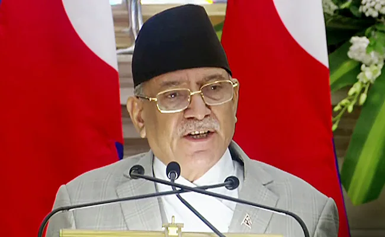
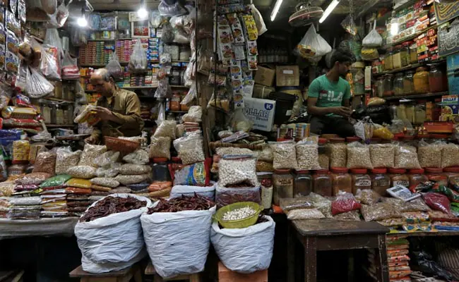
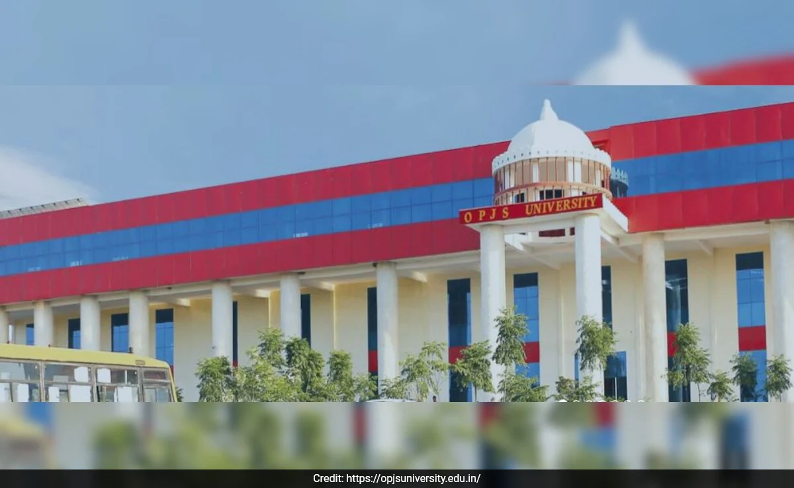
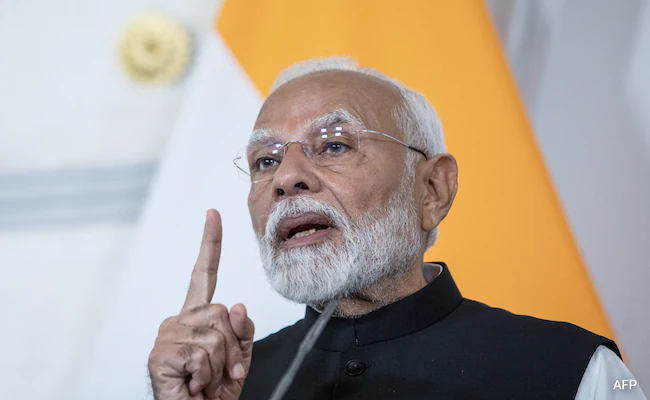
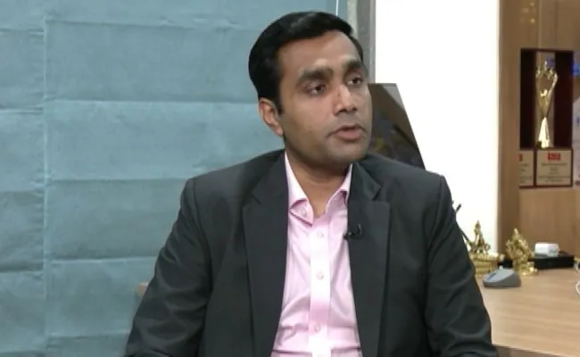

The Daily Buzz 
The Daily Buzz
Achieving a $30 trillion GDP by 2047 and becoming Viksit Bharat is a grand vision of our Prime Minister. It's commendable that beyond the usual politics of caste and religion, we are focusing deeply on development. However, achieving this rapid pace of growth won't be easy. If India continues at its current 7% growth rate, it will likely reach around $16 trillion by 2047 - not the $30 trillion target we aspire for. Therefore, we need to generate an additional $14 trillion in GDP growth by innovating and creating novel products, intellectual property, and businesses.

Kathmandu: Nepal Prime Minister Pushpa Kamal Dahal 'Prachanda' on Friday lost a vote of confidence in Parliament after the Communist Party of Nepal-Unified Marxist Leninist (CPN-UML) withdrew its support for his government.
Prachanda, 69, received 63 votes in the 275-member House of Representatives (HoR). There were 194 votes against the motion.
At least 138 votes are needed to win the vote of trust.

New Delhi: Retail inflation rate accelerated to 5.08% in June from 4.75% in May, government data showed on Friday.
A Reuters poll of 54 economists had forecast retail inflation at 4.80%.

Jaipur: A private university in Rajasthan is facing investigation for allegedly issuing fake and backdated degrees for courses that it did not have the accreditation for. The alleged fake degree count stands at 43,409.
The Rajasthan police's Special Operation Group (SOG) is investigating the alleged fake degrees issued by Om Prakash Jogender Singh (OPJS) University in Churu since its inception in 2013.
The university came under the scanner on April 8 after 1,300 applicants for 2022 physical training instructor (PTI) exam submitted degrees from the university. The course at the university received accreditation only in 2016 and for just 100 seats. Only students enrolled before 2020 were eligible for the PTI 2022 exam.

New Delhi: Prime Minister Narendra Modi said on Friday that observing June 25 as 'Samvidhaan Hatya Diwas' will serve as a reminder of what happened when the Constitution was trampled over.
He said on 'X', "It is also a day to pay homage to each and every person who suffered due to the excesses of the Emergency, a Congress unleashed dark phase of Indian history."
Listen to the latest songs, only on JioSaavn.com
PM Modi's post came soon after Home Minister Amit Shah announced that June 25, the day the Emergency was declared in 1975, would be observed as 'Samvidhaan Hatya Diwas' to remember the "massive contributions" of those who endured inhuman pains during the period.

New Delhi: The country's first transshipment port Vizhinjam will reduce transshipment time by 30-40 per cent from approximately one month at present, Karan Adani, Managing Director of Adani Ports and SEZ Ltd (APSEZ), told NDTV on Friday.
The APSEZ port near Kovalam Beach in Kerala officially received its first mothership, a vessel called 'San Fernando', on Thursday, carrying over 2,000 containers. With San Fernando's arrival, APSEZ's transshipment Vizhinjam Port has catapulted India into the world port business.
"It (the port) is a showcase from a technology perspective as we have implemented AI (artificial intelligence), IoT (Internet of Things), video analytics, all kinds of tech to make operations most efficient," Mr Adani said
Antitrust Body Finds Apple Abused Position In Apps Market In India
The report comes as Apple faces increased antitrust scrutiny in other regions (Representational)
New Delhi: An investigation by the country's antitrust body has found that Apple exploited its dominant position in the market for app stores on its iOS operating system, engaging "in abusive conduct and practices", a confidential report seen by Reuters showed.
The Competition Commission of India (CCI) has been investigating Apple since 2021 for possibly abusing its dominant position in the app market by forcing developers to use its proprietary in-app purchase system.
Apple has denied wrongdoing saying it was a small player in India where phones that use Google's Android system are dominant.
The Supreme Court, continuing its tough stance against tree-cutting in an eco-sensitive zone in the national capital, rapped the Delhi Development Authority (DDA), the AAP government and contractor for "not apprising" Lieutenant Governor Vinai Kumar Saxena about the requirements before ordering the felling of trees. "It appears that no one - including the contractor, Delhi government and DDA - apprised the Lt Governor (L-G) that permission of Supreme Court needs to be obtained before cutting the trees," it said.
"We have perused the two affidavits filed by the vice-chairman of DDA and also the perused affidavit filed by the secretary, forest department. There was reluctance to remember what exactly transpired during L-G's visit. Now the truth has come out. Mr Ashok Kumar Gupta's affidavit explicitly stated what exactly transpired," the court said.
On June 26, the Supreme Court ordered DDA officer Ashok Kumar Gupta to file "a detailed affidavit" as to what exactly transpired during the visit of the L-G to the Ridge area where 1,100 trees were cut. "He will also state if any directions were orally issued by the L-G," the court had said.
Jerusalem: The Israeli government's security cabinet has approved a plan to extend compulsory military service for men to 36 months from the current 32 months, Israel's Ynet news outlet reported on Friday.
The 36-month rule will stay in force for the next eight years, Ynet reported, after a meeting of the security cabinet that took place late on Thursday.
The measure is likely to be submitted to a vote in a meeting of the full cabinet on Sunday, it said.
London: A 17-year-old boy remains in custody after two women were injured in an incident involving a "bladed weapon" at a gurdwara in Kent, south-east England, local police said on Friday.
Kent Police said its officers were called to the Siri Guru Nanak Darbar Gurdwara in Gravesend on Thursday evening to investigate reports that a male had entered the place of worship and attempted to assault those inside.
"It was reported that a male had entered the location and attempted to assault those in attendance whilst armed with a bladed weapon. Nobody was seriously injured during the incident but two women required medical attention for cuts and bruises," Kent Police said in a statement.